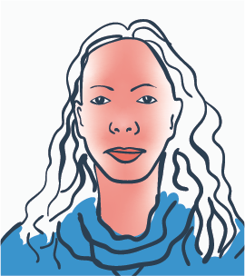
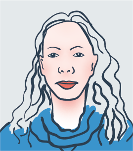

Measurement Signal Quality help
Low Measurement Signal Quality can be casued by any of the following three problems, poor lighting, movement and wifi.
Poor lighting
- Make sure your face is evenly lit by diffuse lighting.
- Avoid strong shadows and uneven lighting.
- Lighting must remain constant during the measurement.
- Good lighting is typically found in front of a window or in a brightly lit room.

Poor contrast; subject is top lit with strong shadows.

Poor contrast; the subject isn’t lit and the background is much brighter.

Poor contrast; the subject is lit from one side with strong shadows over the face.

Ideal diffuse lighting; the subject and the background is evenly lit from multiple sources.
Movement
- Make sure the phone or tablet remains still.
- Make sure you remain as still as possible, relaxed and breathing naturally.
- Make sure your face stays in the blue outline and you don't move further away.
- If you can't hold your device still, use a stand or rest your device against an object. Examples below.

Poor wifi connection
- The app requires a strong and stable wifi signal.